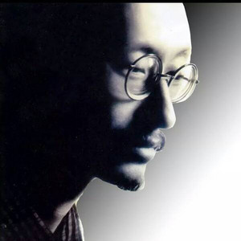
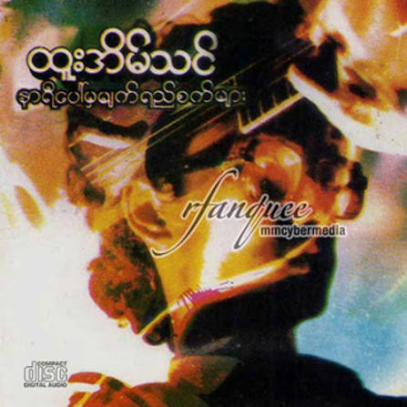
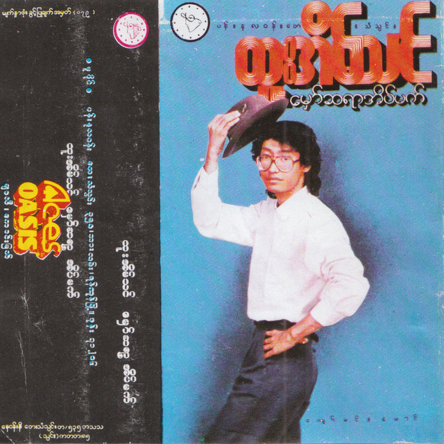
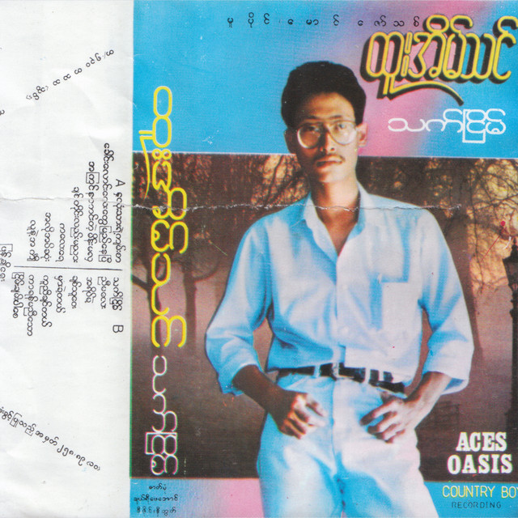
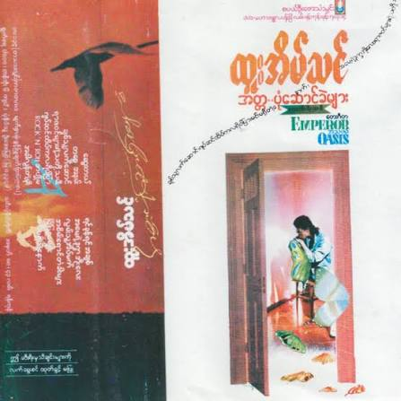
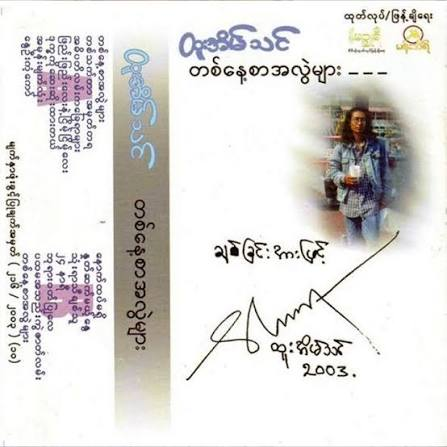

Htoo Eain Thin (1963–2004), born Kyaw Myint Lwin, was a renowned Burmese singer-songwriter who played an important role in the development of Myanmar's modern pop rock music. He became widely recognized during the mid-1980s and remained one of the country's most respected musical artists.
Throughout his 18-year musical career, he released 14 solo albums and established a lasting place in Myanmar's music history. His artistic journey represents an important chapter in the evolution of Burmese popular music.
This website presents an overview of his life, musical career, albums, and enduring contribution to Myanmar's cultural heritage.
|
 |
Name | Htoo Eain Thin |
| Born | 1959, Myanmar | |
| Nationality | Myanmar | |
| Occupation | Singer and Songwriter | |
| Music Style | Pop, Rock | |
| Known For | His songs and songwriting | |
| Legacy | A beloved Myanmar music legend |
Htoo Eain Thin (ထူးအိမ်သင်), whose real name was Kyaw Myint Lwin (ကျော်မြင့်လွင်), was a famous Burmese singer and songwriter. He was born on 1 July 1963 in Pathein, Myanmar. He was widely known by his nickname, Ko Nget (ကိုငှက်). His music mainly included rock and pop rock. He became one of the most influential musicians in Myanmar and was admired for his meaningful lyrics and distinctive voice. He passed away on 14 August 2004 in Yangon, Myanmar, at the age of 41.
Htoo Eain Thin was known for his expressive voice and thoughtful songwriting. His music combined memorable melodies with lyrics that reflected human emotions and everyday life.
His songs often explored themes of love, longing, hope, loneliness, and the experiences of ordinary people. He had a special ability to express deep feelings through simple yet meaningful words.
His musical style stood out for its emotional depth, poetic lyrics, and memorable melodies. These qualities helped him build a strong connection with his audience and made his songs deeply personal to many listeners.
Through his distinctive musical identity, Htoo Eain Thin became a memorable figure in Myanmar music. His songs continue to be appreciated by listeners who find comfort, meaning, and inspiration in his music.
The Life, Music and Legacy of Htoo Eain Thin
Htoo Eain Thin, born Kyaw Myint Lwin, was one of the most respected singer-songwriters in Myanmar. He became well known during the 1980s for his distinctive voice, meaningful lyrics and unique musical style.
His music combined pop, rock and influences from Western music. He wrote songs about love, loneliness, life, hope and human emotions. His songs connected deeply with listeners because they expressed feelings and experiences that many people could understand.
Throughout his career, he released numerous albums and created songs that became memorable parts of Myanmar's music history. His work helped shape the development of modern Burmese pop-rock music.
Although he passed away on 14 August 2004, his music continues to be remembered and loved by generations of listeners. His musical legacy remains an important part of Myanmar's popular music culture.
The following table highlights selected albums from Htoo Eain Thin's musical career.
| No. | Album Title | Year | Musical Highlights |
|---|---|---|---|
| 01 | နာရီပေါ်မှမျက်ရည်စက်များ | 1987 | An early album that introduced his distinctive voice and emotional songwriting. |
| 02 | မှော်ဆရာအိပ်မက် | 1988 | Continued his musical development with expressive songs and memorable melodies. |
| 03 | သက်ငြိမ် | 1989 | Reflected his thoughtful lyrics and distinctive musical identity. |
| 04 | အတ္တ..ပုံဆောင်ခဲများ | 1991 | An album associated with memorable songs such as ဆွေးတယ်. |
| 05 | အရင်အတိုင်း | 1991 | Another release from his continuing musical journey. |
| 06 | ပဥ္စဂံတေးစု | 1992 | Part of his wider collection of musical recordings. |
| 07 | စကားလုံးမရှိတဲ့ကောင်းကင် | 1995 | Remembered for its poetic title and emotional musical themes. |
| 08 | ဝင်ရိုးစွန်းမီး | 1997 | Demonstrated his continuing development as a singer-songwriter. |
| 09 | အကြွင်းမဲ့မေတ္တာတော်သီချင်း (သို့မဟုတ်) အမေ | 1997 | Associated with the deeply moving song အမေ့အိမ်. |
| 10 | ငြိမ်းချမ်းပါစေ | 1998 | An album from his mature musical period. |
| 11 | အမှတ်တရဒဏ်ရာသီချင်းများ | 1999 | Reflects the emotional themes associated with his music. |
|
 နာရီပေါ်မှမျက်ရည်စက်များ |
 မှော်ဆရာအိပ်မက် |
 သက်ငြိမ် |
 အတ္တ..ပုံဆောင်ခဲများ |
 တစ်နေ့စာအလွဲများ |
Htoo Eain Thin, one of Myanmar's most beloved singer-songwriters, passed away on August 14, 2004, at the age of 41. His death marked a heartbreaking moment in Myanmar's music history, leaving behind a legacy that continues to touch the hearts of generations. Throughout his life, he expressed love, loneliness, sorrow, hope and the realities of human existence through his songs. His music was more than entertainment; it became a voice for emotions that many people struggled to put into words. Although he had spent years creating music and sharing his feelings with the world, his life came to an untimely end, leaving fans with memories of his remarkable voice and poetic songwriting. His passing was widely mourned by those who admired his talent and the sincerity of his music. Even after his death, his songs continued to be played, remembered and passed down to younger generations. For many listeners, his music remains deeply personal, bringing back memories of love, loss and moments they can never forget. Htoo Eain Thin may have left this world, but the emotions he placed in his songs continue to live on. His story reminds us that while a person's life may be limited by time, the art they leave behind can endure far beyond their final days. He will always be remembered not only as a talented musician but also as an artist whose songs became an unforgettable part of Myanmar's musical heritage.
Every song tells a story, and every memory keeps his music alive. Thank you for remembering Htoo Eain Thin.